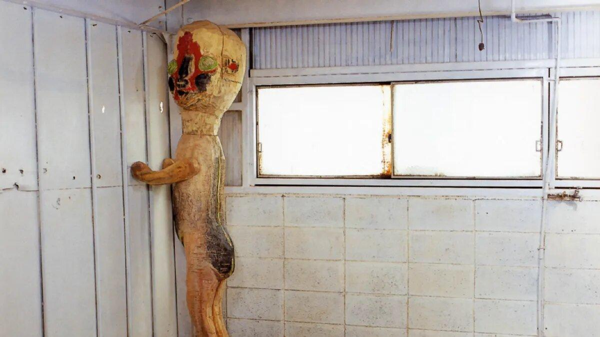
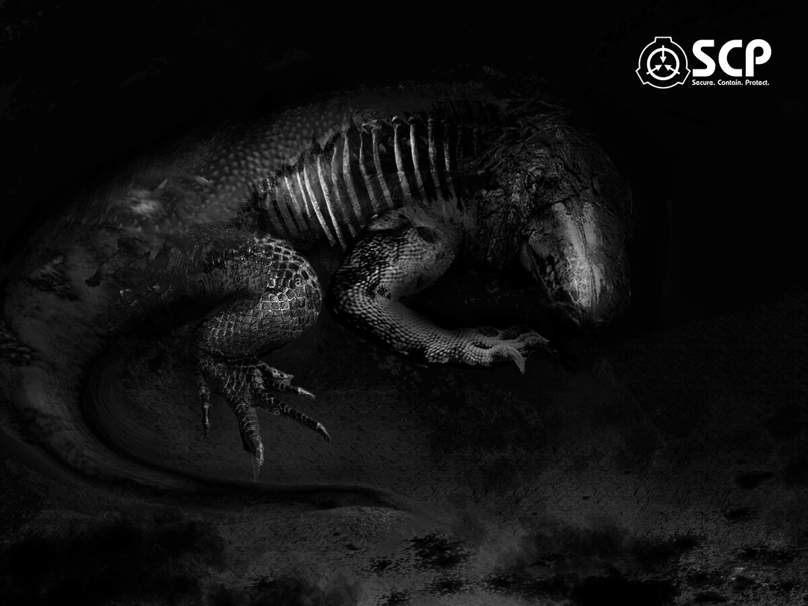
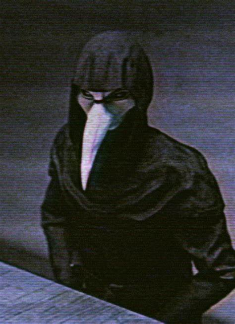
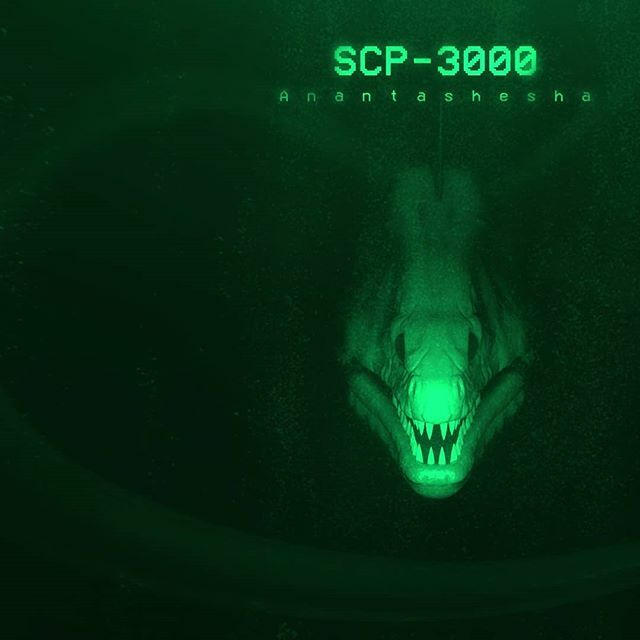
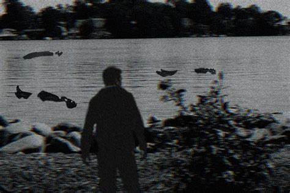
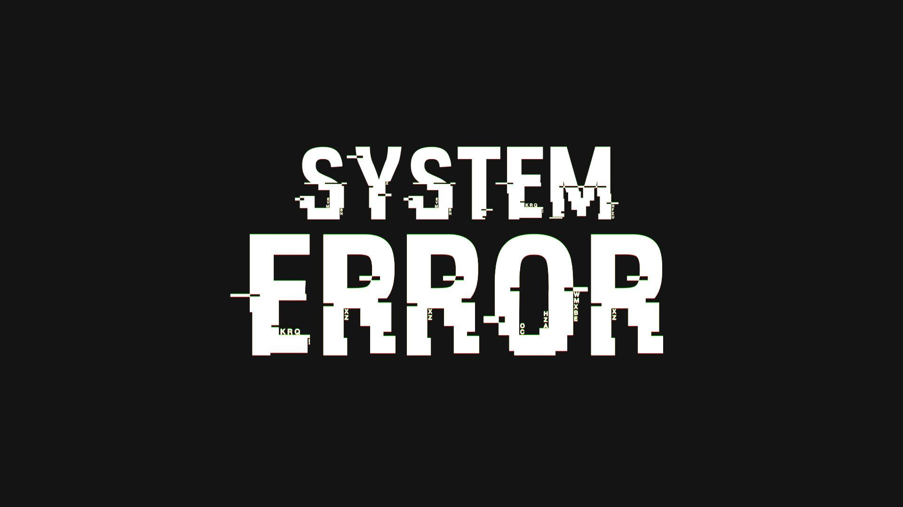

| Numéro du SCP | Description | ||
|---|---|---|---|
| Courte Description | Classe | Photographie | |
| SCP-173 | La Statue - Une statue qui se mouvoit lorsqu'elle n'est pas observée. | Euclid |  |
| SCP-682 | Reptile Difficile à Détruire - Une créature reptilienne hostile et hautement intelligente. | Keter |  |
| SCP-049 | Le Docteur de la Peste - Une entité ressemblant à un médecin de la peste médiéval. | Euclid |  |
| SCP-3000 | Anantashesha - Un serpent de mer anormalement long et cauchmardesque. | Thaumiel |  |
| SCP-2316 | Sortie Scolaire - Vous ne reconnaissez pas les corps dans l'eau. | Keter |  |
| SCP-000 | ERReuR CHamp$ N0n-DéfINl - ERReuuRReurr. Veuillez contacter l'administrateur du système. | #NULL |  |